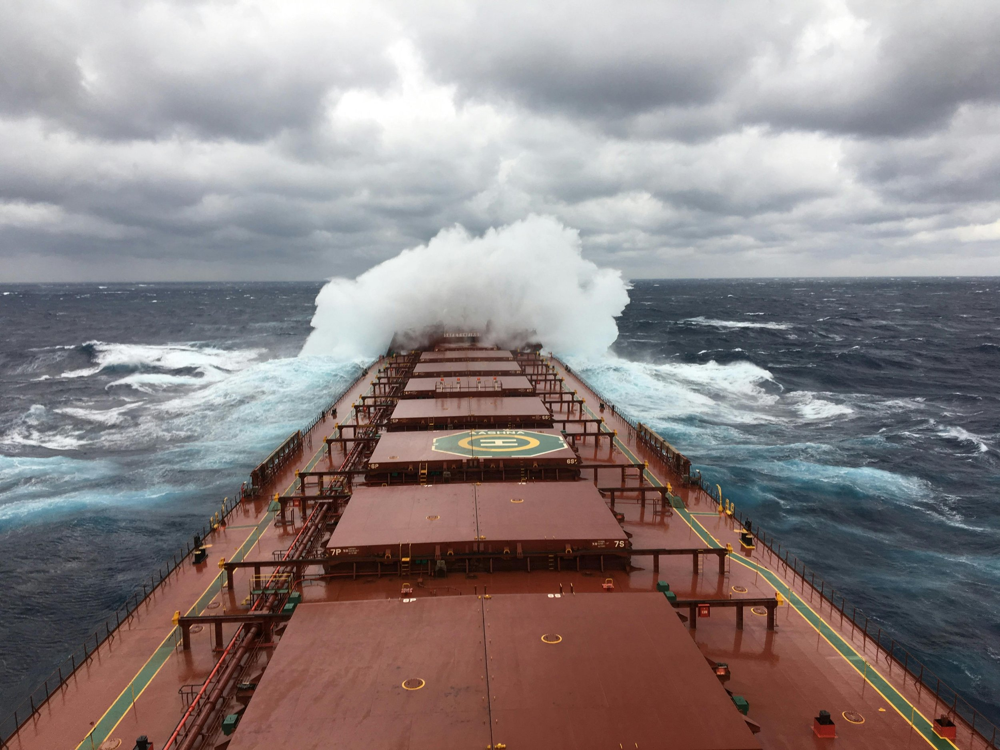

ByEirini Diamantara&Dimitris Roumeliotis
The period spanning late February to late April 2026 has delivered a market narrative defined by divergence, resilience, and most notably, a structural repricing of dry bulk assets that has moved well ahead of the freight rate dynamics that would traditionally justify it.
Capesize absorbed the initial shock of the US-Iran military confrontation with a sharp but short-lived correction. From $24,211/day on 27 February, the Baltic C5TC fell to a period low of $19,188/day by 10 March as geopolitical uncertainty prompted owners and charterers alike to adopt a cautious posture. What followed was not prolonged deterioration but a methodical recovery that accelerated sharply through April, with the index closing at $35,333/day on 24 April, an 86% gain from its March low and a 47% increase on the period open. The full-period average settled at approximately $25,800/day, a figure that materially understates the directional momentum embedded in the final weeks. Kamsarmax delivered a fundamentally different dynamic. Starting at $17,481/day, the Baltic P5TC peaked briefly at $18,127/day in early March before entering a softening phase that extended through late March, bottoming at $15,682/day. The subsequent recovery has been gradual rather than forceful, with rates closing at $17,638/day, effectively flat versus the period open. The full-period average of around $16,900/day reflects a segment that has remained range-bound, with the April recovery concentrating in the final three weeks but lacking the conviction seen in the larger vessel classes. Ultramax tracked more closely with the Capesize trajectory. After slipping from $16,915/day to a trough near $15,190/day by end-March, the Baltic S11TC staged a strong and still-accelerating rebound, reaching $19,403/day by 24 April, approaching levels last seen in early December 2023, with the index posting gains in each of the final sessions. Handysize remains the clear laggard: after a brief early firming that peaked at $15,002/day on 9 March, the HS7TC fell steadily to $12,452/day in early April and, while partially retracing to $14,354/day, has yet to recover its February opening levels.
The most analytically significant dimension of this environment, however, lies not in freight rates but in what has happened to asset values at equivalent earnings levels. All price references reflect average market levels for five-year-old Chinese-built vessels. Placing the current Capesize 5TC of $35,333/day alongside two near-identical historical readings $35,780/day in March 2024 and $35,527/day in December 2025, the freight context is virtually unchanged across all three dates. What has shifted sharply is acquisition cost: a vessel fetched $57 million in March 2024, $64 million in December 2025, and commands $71 million today. A 25% appreciation in asset value with no corresponding movement in daily earnings is not a freight market story, it is a structural repricing of the underlying asset class, one that reflects deepening owner confidence in the long-term supply-demand balance and growing competition for large and modern tonnage. The Ultramax segment confirms the pattern: a five-year-old Ultramax has moved from $30 million in late 2023 to $37 million today at near-identical TCE levels, a 23% increase over roughly two and a half years, a period with average earnings approximately $15,000/day. Kamsarmax and Handysize diverge from this trend, with asset prices broadly flat to slightly below their 2024 equivalents at comparable earnings, signaling that the structural premium has concentrated at the larger end of the size spectrum, where supply scarcity and long-haul demand exposure carry the most strategic weight.
Data source:Xclusiv Shipbrokers Inc.